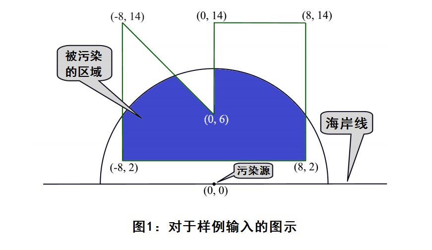

作为水污染管理部门的一名雇员，你需要监控那些被有意无意倒入河流、湖泊和海洋的污染物。你的其中一项工作就是估计污染物对不同的水生态系统（珊瑚礁、产卵地等等）造成的影响。

你计算所使用的模型已经在图1中被说明。海岸线（图1中的水平直线）为x轴，污染源位于原点(0, 0)。污染的蔓延呈半圆形，多边形代表了被波及的生态系统。你需要计算出生态系统被污染的面积，也就是图中深蓝色部分。
| F.A.Qs | Home | Discuss | ProblemSet | Status | Ranklist | Contest | 入门OJ | ModifyUser Xeonacid | Logout | 捐赠本站 |
|---|